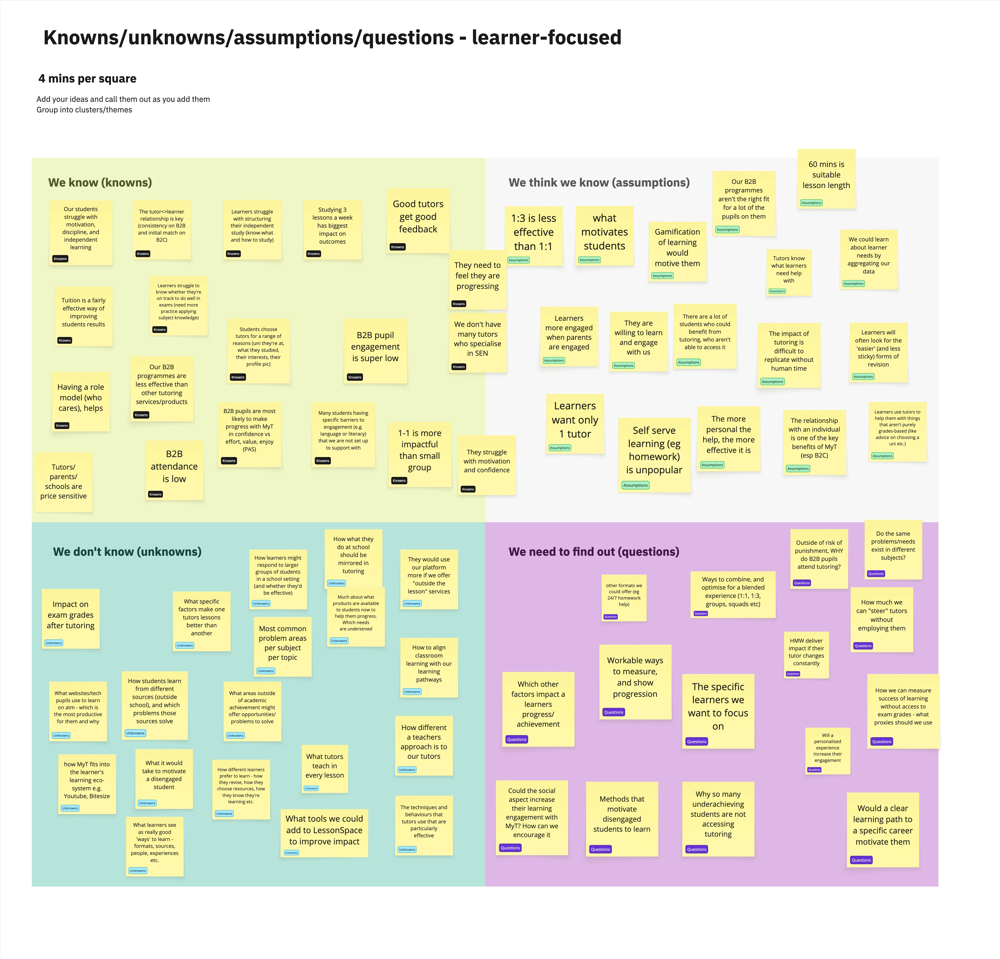
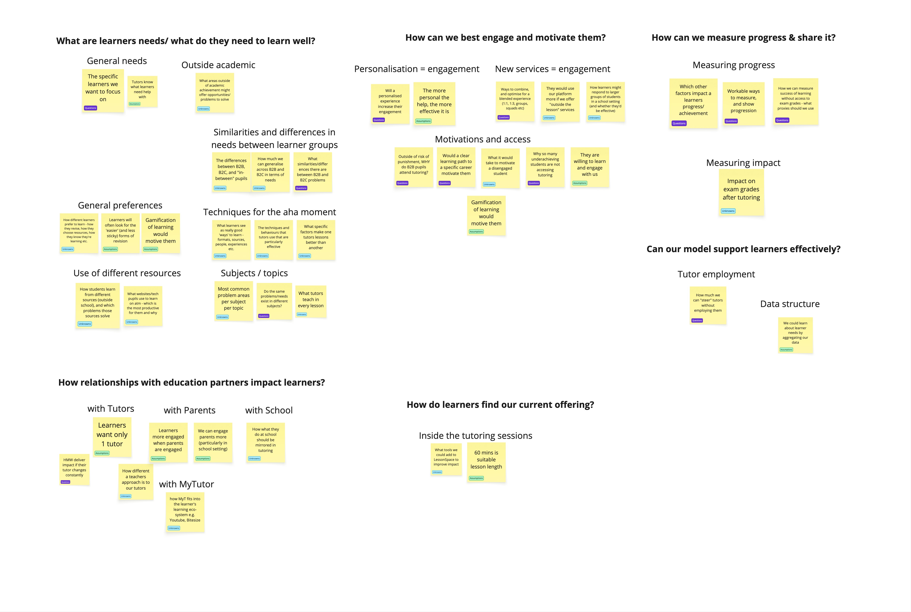
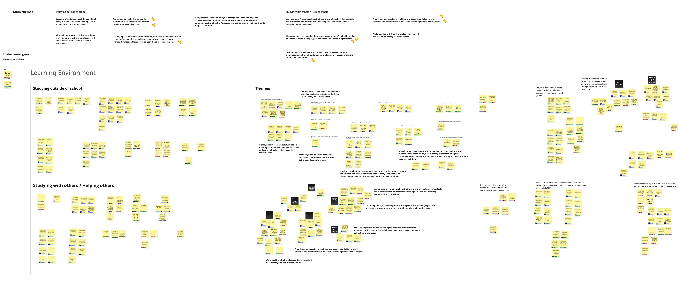
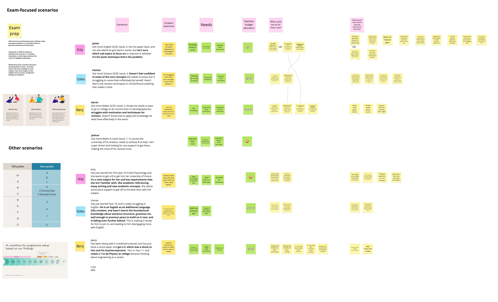
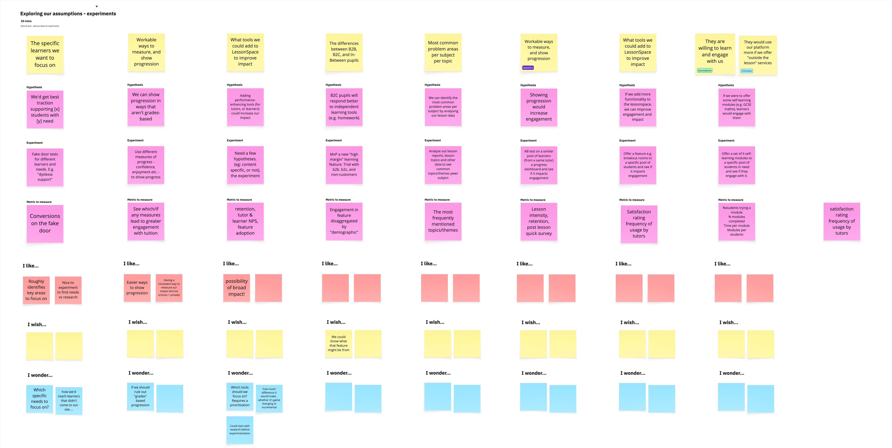
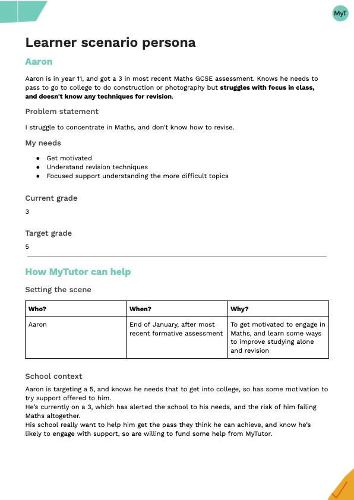
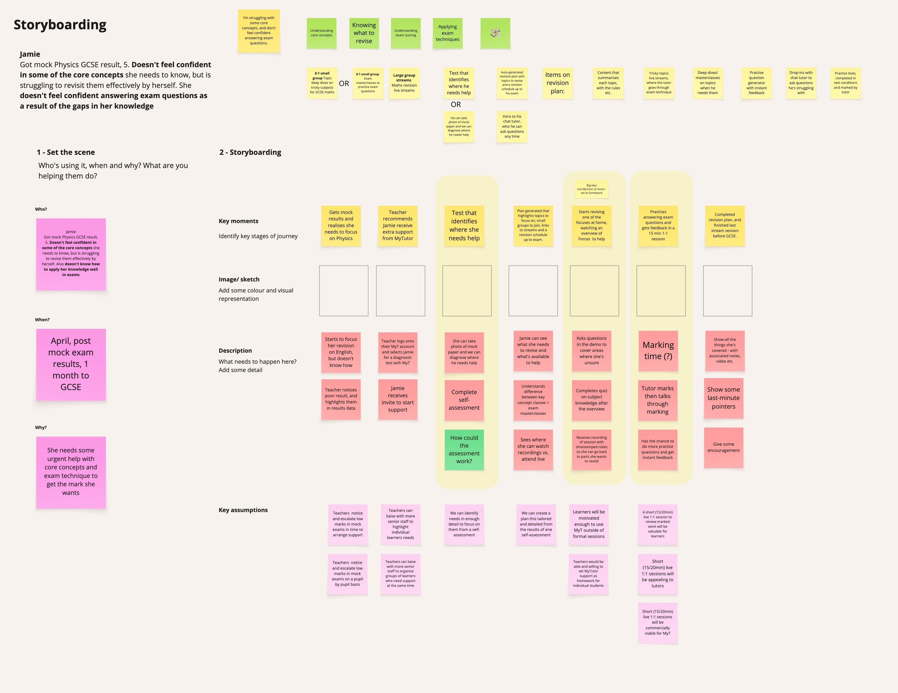
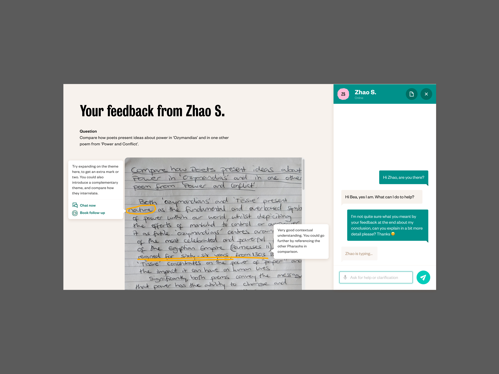
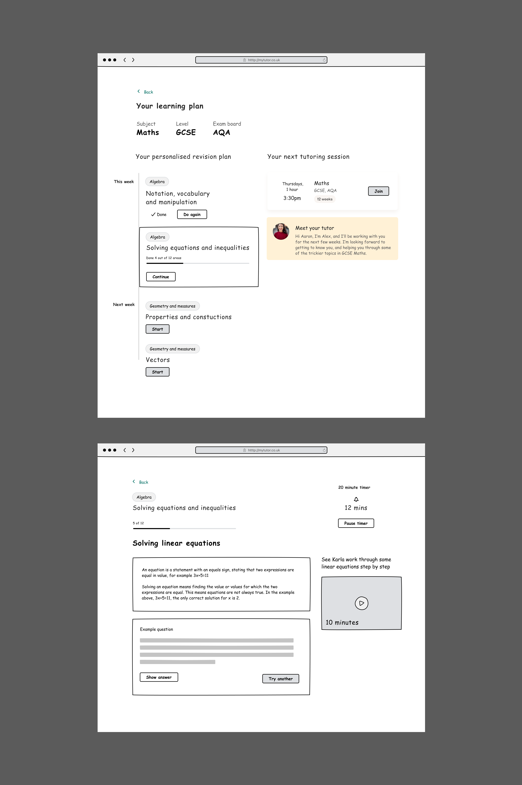
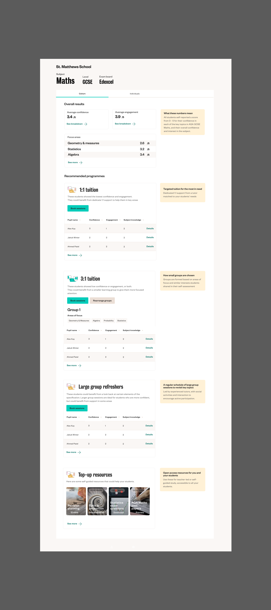

EdtechProductStrategyVision
MyTutor —
What I did
Discovery
Prototyping
Service design
Strategy
Team
I led research and design, working with another Product Designer, Senior Product Manager, CPO, General Manager, and a wider group of commercial stakeholders.
Context
MyTutor had ambitious goals of impacting a million learners’ lives, but with our growth trajectory, it would take many years to get there.
We wanted to support a wider variety of learning interventions, to broaden our offering from 1:1 and small group tuition, and make our services accessible to a wider range of learners.
Outcome
Our Learner-focused product strategy formed a core part of the updated vision and strategy that raised an additional £4m in funding from existing investors.
The strategy influenced the product org and wider business’ understanding and prioritisation of a key user group, learners, and led to multiple experiments and products that served learners’ needs and broadened our proposition.

.png)
Exploring the problem
I helped lead a shift in product strategy to be more learner-centric, in part to solve the problem of not fully understanding what was effective in helping our learners, and how to support them better. We also had a related business problem, which was our reliance on live tutoring to deliver interventions, and associated costs and risk. There was a huge addressable market, but we were only reaching a small portion of it.

I led work to understand how we could address the two problems, starting with primary research to understand learner needs better, and research with teachers and tutors to understand wider challenges learners have with education. I organised our team and discovery approach, collaborating to conduct primary research while exploring short-term hypotheses via experimentation. I used a variety of facilitation and collaboration frameworks to help us identify key hypotheses to focus on, evaluating them through viability, desirability and feasibility lenses, and planning ways to test them quickly.


We identified key areas for investigation based on our existing knowledge, like ‘studying with others’ and ‘studying outside school’ and planned research with learners and teachers to find out more. Learner and teacher interviews helped us uncover key themes across these areas, which we developed into a range of hypotheses and potential service propositions to test.


Solutions and ideas
We designed experiments and further research to build confidence and understanding of the problems, delivering off-product experiments to explore new behaviours, and running concept tests to get early feedback, learning by doing. We also developed scenario personas for some of the common learner archetypes we identified, to help us communicate more clearly which learners we were designing for with each product, service or intervention.


Testing & iterating
We tested some of our concepts and personas with teachers, to see whether they identified those combinations of learner needs and contexts, and learn how the concepts might solve teacher and learner problems, and we could improve them. We also started running some of the experiments we’d designed, including an essay feedback service, and a practice question tool. Learners and tutors interacting with our experimental products and services highlighted their benefits, and also where they fell short, and provided us lots of data and inspiration to improve or change what we did next. We worked with our tutor consultants to improve the command word accuracy, and we also made prompts more detailed to refine the responses learners got to their answers.



We used what we’d learnt and delivered so far to shape the strategy and vision for the future, and drive our future experiments and initiatives. A key area we had confidence in was pairing self-guided study experiences with tutor-led provision, and how this combination of services could both make our offering more accessible, and also strengthen our competitive advantage and defensibility. We drafted a vision that pieced together some of the learner needs, problems and solutions we’d identified and designed, and set them in the wider context of the education and intervention space and competitive landscape. Senior leadership used this vision to attract further investment for the company, and rally the board and wider team around.